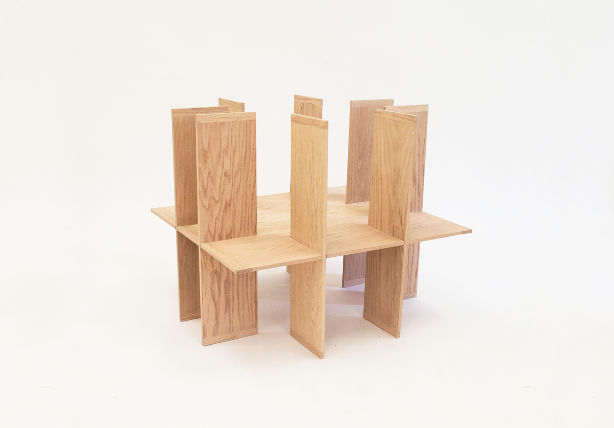
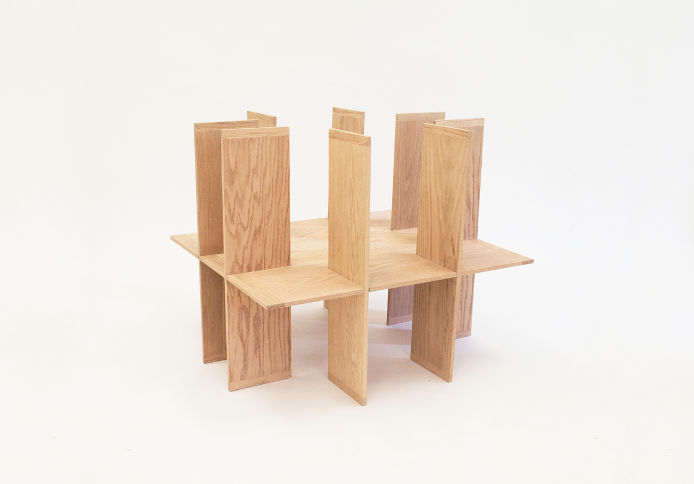

Image made to illustrate a light-weight aluminum pavillion-like structure. Comprised of a bench and roof.
Modeled in Solidworks and rendered in Keyshot.
Image made to illustrate a watering can concept with a cone for scale.
Modeled in Solidworks and rendered in Keyshot.

For our senior show, I created two promotional posters which were hung next to eachother around campus. The posters aimed to acknowledge and represent the complexity, versatility, and actuality of the Department of Furniture Design in 2016 at RISD.
In one case, people simply know the department for our explorations in materials and making- often tied with a playful nickname "Furn." On the other hand, the work we produce is often involved with much larger ideas and practices. The department name begins to feel like a poor representation of its actual output.
Inkjet on newsprint.
 

This table was inspired by communal architectural plans and the idea of microcosms that exist in architecture.
Through the architectural framing / cropping of the table plane view, a sense of magnitude is added to the object. A person must physically move around and look through the table to access or view an object that may be hidden. The experience of the object is similar to that of one which is much larger.
Similar to larger communal architectural spaces, the center space highlights and frames a public work of this scale, which may be a vase of flowers or bowl of fruit.
Constructed in all oaks.